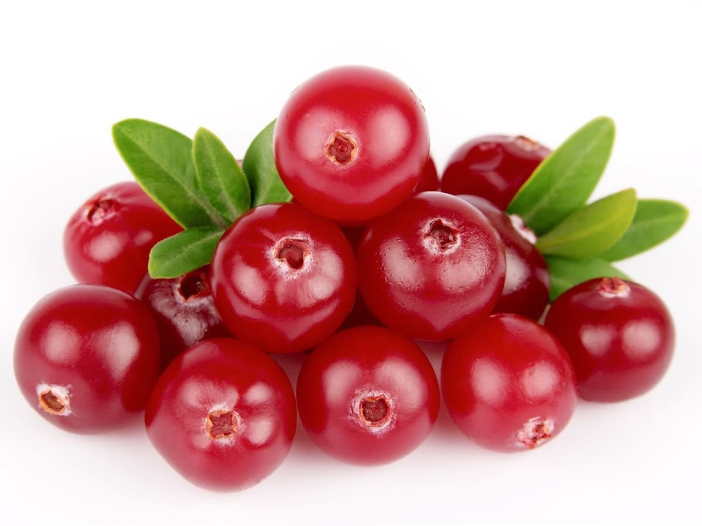
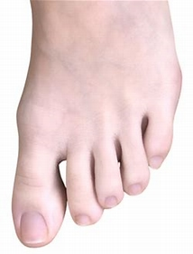

cranny cranberry
On a tierlist, this would be second to last, infront of tamatoes, cranberry is nasty and taste like pee, it's sour and not worth being invented.
see taylor swift.

tamatoes
If I had a tierlist, this would be in the dumpster, because it's trash, it's only made for scrumdimady yumcious ketchup, P.S. How is this a fruit!!
see Ksi. P.S his new song is toes.
Watery Watermelons
If I had a tierlist, Watermelons would be top 5, because they are super uber good and scrumpcious, the only bad part is the juice is sticky af.
see taylor swift.